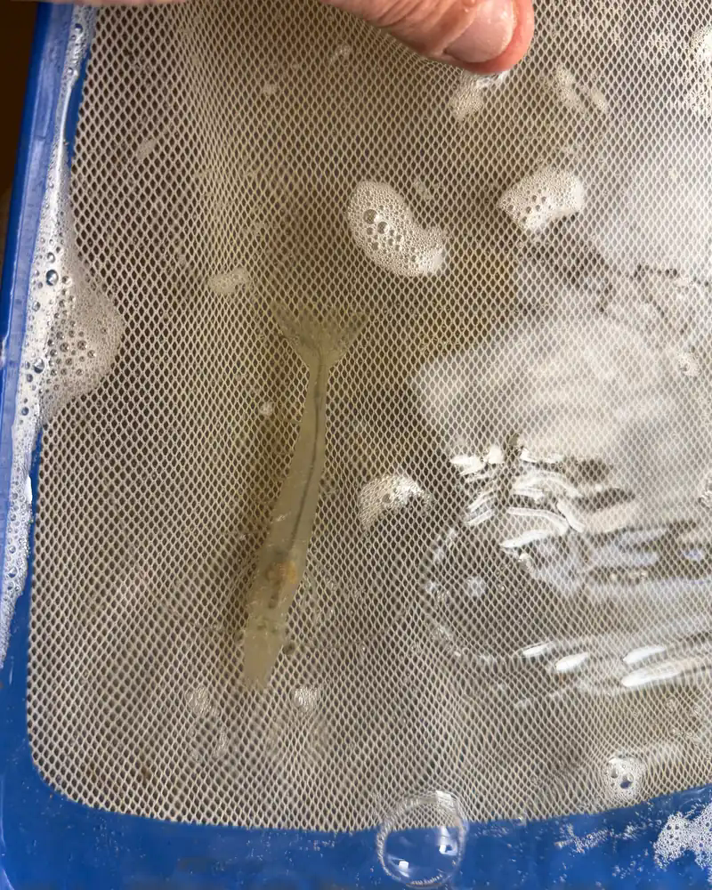
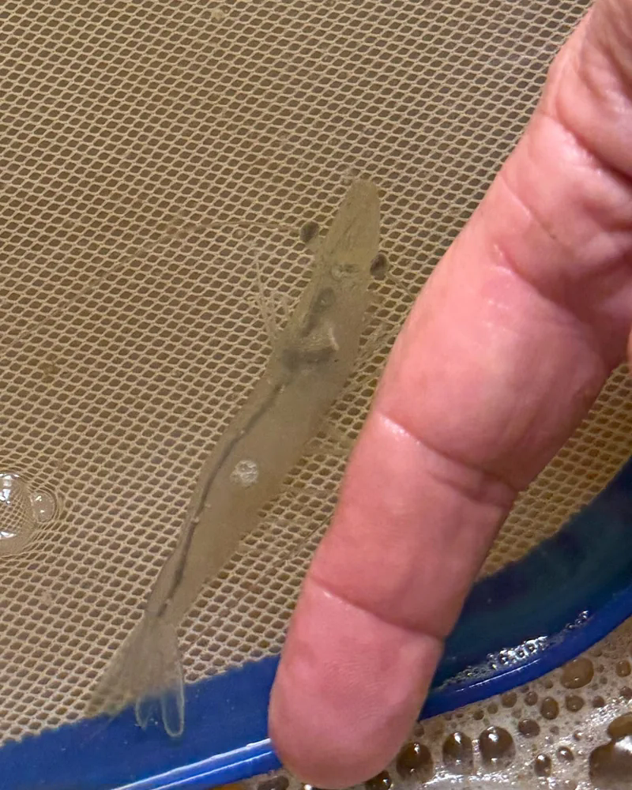
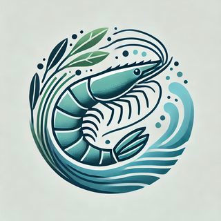

Recirculating aquaculture
Our shrimp live in indoor tanks where water is filtered and reused continuously. A closed system means steady water quality, no ocean discharge, and production that does not depend on the season.
Mendocino County, California
NorCal Premier Prawn grows shrimp in a recirculating aquaculture system near Ukiah, for chefs who want local seafood harvested days, not weeks, before it reaches the plate.
The farm
Our shrimp live in indoor tanks where water is filtered and reused continuously. A closed system means steady water quality, no ocean discharge, and production that does not depend on the season.
The farm sits on an active olive orchard in the Ukiah area. Nutrient-rich farm waste fertilizes the olive trees instead of becoming a disposal problem.
We raise Litopenaeus vannamei, the Pacific whiteleg shrimp, delivered fresh rather than frozen and shipped from across the world.
Our farm is registered with the California Department of Fish and Wildlife as an aquaculture facility that rears invertebrates for sale. Registrant: Far Future Solutions LLC, Registration #2046, valid through 12/31/2027. About California aquaculture registration.
The shrimp
We raise Pacific whiteleg shrimp (Litopenaeus vannamei) in a recirculating aquaculture system (RAS). Instead of frozen imports that travel thousands of miles, our shrimp are harvested and delivered fresh and local to North Coast kitchens.
Whiteleg shrimp are prized for a clean, naturally sweet flavor and a firm, snappy bite that holds up on the grill, in the pan, or raw in crudo.
Our shrimp grow indoors in clean, closely monitored water, filtered and recirculated around the clock, so conditions stay steady from nursery to harvest.
We feed premium Zeigler shrimp diets, a long-established aquaculture feed maker, matched to each stage of growth.
Harvested to order and delivered locally, so chefs receive shrimp that have never been through an import freezer chain.

Real photo · Our nursery
Real photo · Our nurseryFrom our tanks
Real photos from our nursery: our young Pacific whiteleg shrimp, lifted from the tank in a net. Every shrimp we sell starts here, in clean, closely monitored water in Mendocino County.
Sustainability
Our RAS recirculates and filters its water through mechanical filtration, a moving-bed bioreactor, and lava-rock biofiltration. Water is cleaned and reused, with no discharge to creeks, rivers, or the ocean.
The farm sits on a working olive orchard. Solids captured from the system become fertilizer for the olive trees, turning a waste stream into a resource.
Most shrimp eaten in the U.S. is imported. Ours is grown in Mendocino County and delivered to nearby restaurants, cutting the distance from farm to plate.
We track water quality on-site, including dissolved oxygen and temperature, so problems are caught early and the shrimp stay in healthy conditions.
For restaurants
We supply high-end restaurants across the North Coast and wine country. Our first harvest is planned for January 2027, followed by year-round cultivation. Chefs interested in a standing order can reach out now to get on the list.

Community token
ShrimpCoin is a Solana Token-2022 token associated with NorCal Premier Prawn.
mntsByXQ5QyqMkknKzX1w4CEmErG3RjQbB4zuC6cwKPView on Solscan Token metadata
We are exploring a few ways ShrimpCoin could connect to the farm. These are plans, not commitments, and may change:
ShrimpCoin is a utility and community token, not an investment. There is no promise of returns, profit, or any price.
Not financial advice. Information is provided for transparency only; do your own research.
Contact
Restaurant inquiries, farm visits, and general questions: